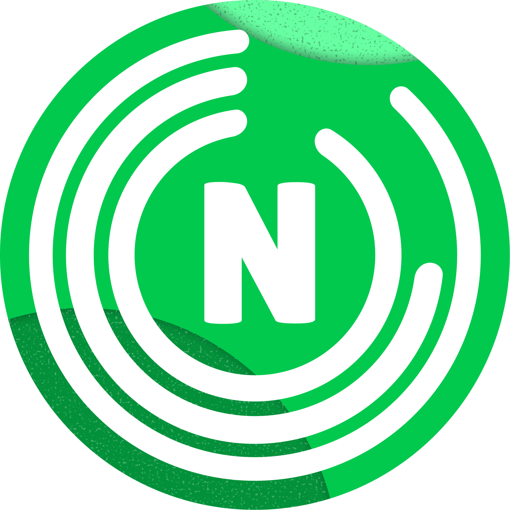
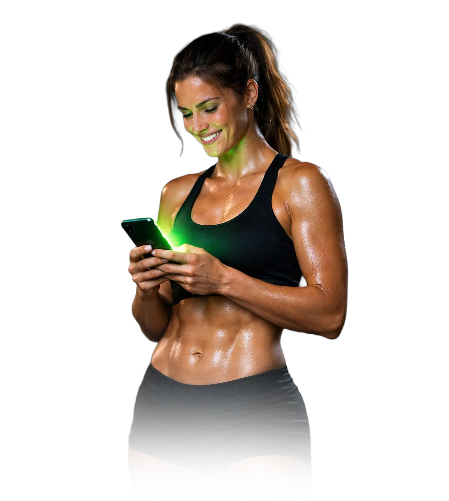

AI nutritionist
Write like a human. Get calories and macros without manual friction.

NutriTrackNutriTrack does not sell “another calorie tracker”. It sells control: AI nutritionist, barcode scan, saved foods, weight tracking, and weekly AI reports.

Write like a human. Get calories and macros without manual friction.
One scan. One log. No messy database hunting.
Your own meals and products stay one tap away.
Not a random daily number. A trend you can actually read.
A short weekly breakdown instead of dry tables and clutter.
NutriTrack is built around the iPhone experience, not around landing-page copy.
Get inside now and be first in line for the native iPhone release.
Request access